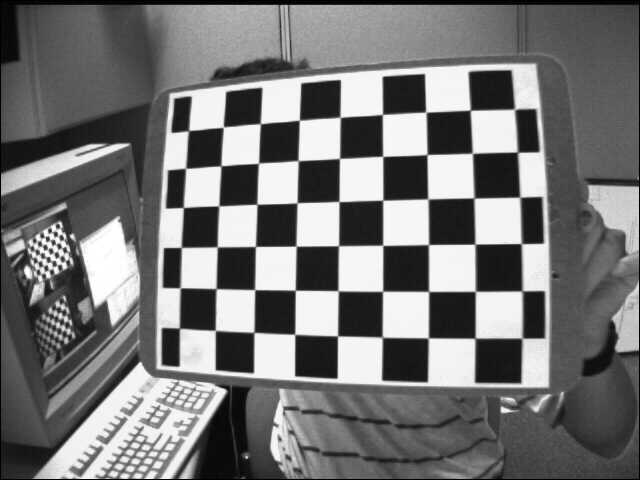
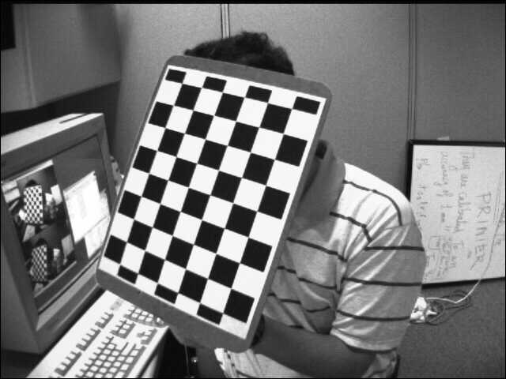
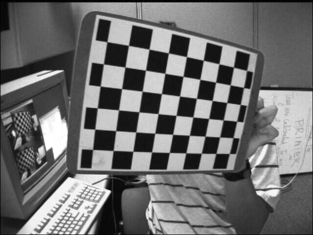
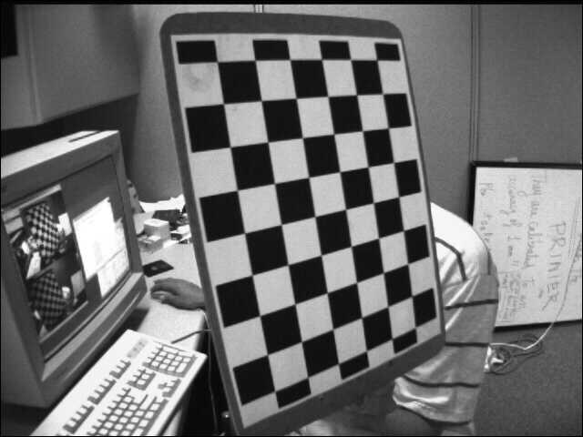

Autores: [Igor Domingos da Silva Mozetic, Jhonattan Ferreira Machado, Mikael Alves Monteiro]
Data de Realização dos Experimentos: 25/06/2025
Data de Publicação do Relatório: 02/07/2025
A calibração de câmeras é uma etapa fundamental em aplicações de visão computacional que exigem precisão na reconstrução do ambiente tridimensional ou na correção de distorções presentes nas imagens. Esse processo tem como objetivo determinar os parâmetros intrínsecos e extrínsecos de uma câmera, permitindo, assim, compreender e compensar as imperfeições ópticas e geométricas do sistema de captura.
Este relatório apresenta os procedimentos e resultados obtidos no Laboratório 2 da disciplina ESZA019 – Visão Computacional, cujo foco foi a realização prática da calibração de câmeras. Inicialmente, foram explorados conceitos teóricos relacionados à geometria da formação de imagens e aos princípios matemáticos que fundamentam a calibração, incluindo o modelo de câmera pinhole e os efeitos de distorção radial das lentes.
Em seguida, foram executados experimentos de calibração utilizando imagens fornecidas e imagens capturadas diretamente com webcams, além da aplicação de técnicas de correção de distorções nas imagens obtidas. Por fim, os parâmetros resultantes, como matriz de calibração, vetores de rotação e translação e coeficientes de distorção, foram analisados e comparados, proporcionando uma melhor compreensão do comportamento das câmeras utilizadas.
Se a distância do pinhole ao plano de imagem é a distância focal $f$, as equações de projeção são:
$$x = f \frac{X}{Z} \quad \text{e} \quad y = f \frac{Y}{Z}$$Embora simples, essa representação não é linear devido à divisão por $Z$. Para simplificar os cálculos em computação gráfica e visão computacional, utilizamos coordenadas homogêneas. Ao adicionar uma quarta coordenada, podemos expressar essa projeção não linear como uma transformação matricial linear. Um ponto 3D $(X, Y, Z)$ torna-se $(X, Y, Z, 1)$ e um ponto 2D $(x, y)$ torna-se $(x, y, 1)$. A projeção pode então ser escrita como:
$$\begin{pmatrix} x' \\ y' \\ w' \end{pmatrix} = \begin{bmatrix} f & 0 & 0 & 0 \\ 0 & f & 0 & 0 \\ 0 & 0 & 1 & 0 \end{bmatrix} \begin{pmatrix} X \\ Y \\ Z \\ 1 \end{pmatrix}$$Onde as coordenadas cartesianas 2D são recuperadas dividindo por $w'$: $x = x'/w'$ e $y = y'/w'$. Essa formulação matricial é a base para todos os modelos de câmera mais complexos.
O modelo pinhole ideal é uma aproximação. Câmeras reais têm propriedades ópticas e de sensor que precisam ser modeladas. Os parâmetros intrínsecos são aqueles que definem as características internas e únicas de um conjunto câmera-lente específico. Eles não mudam quando a câmera é movida e são agrupados em uma matriz 3x3 conhecida como matriz de calibração ou matriz intrínseca K.
A matriz $K$ é definida como:
$$K = \begin{bmatrix} f_x & s & c_x \\ 0 & f_y & c_y \\ 0 & 0 & 1 \end{bmatrix}$$Vamos detalhar cada um de seus componentes:
largura/2, altura/2). No entanto, devido a pequenas imperfeições na montagem da lente e do sensor, o ponto principal quase nunca está perfeitamente no centro.Com a matriz $K$, a equação de projeção pinhole (em coordenadas de câmera) se torna:
$$\begin{pmatrix} x \\ y \\ 1 \end{pmatrix} \sim K \begin{pmatrix} X_c \\ Y_c \\ Z_c \end{pmatrix}$$Onde o símbolo $\sim$ indica igualdade até um fator de escala.
Enquanto os parâmetros intrínsecos descrevem como a câmera forma uma imagem, os parâmetros extrínsecos descrevem onde a câmera está e para onde ela está apontando no mundo. Eles definem a transformação de um sistema de coordenadas do mundo (um referencial fixo) para o sistema de coordenadas da câmera. Esta transformação é uma transformação de corpo rígido, composta por uma rotação e uma translação.
A transformação de um ponto $P_{world}$ no sistema de coordenadas do mundo para um ponto $P_{camera}$ no sistema de coordenadas da câmera é dada por:
$$P_{camera} = [R|t] P_{world}$$Onde $[R|t]$ é uma matriz 3x4 que concatena a matriz de rotação $R$ e o vetor de translação $t$.
É fundamental entender que, para cada imagem de calibração que capturamos, os parâmetros intrínsecos ($K$ e coeficientes de distorção) permanecem os mesmos, pois são características da câmera. No entanto, os parâmetros extrínsecos ($R$ e $t$) serão diferentes para cada imagem. Isso ocorre porque, ao mover a câmera para capturar o tabuleiro de xadrez de diferentes ângulos e posições, estamos mudando a pose da câmera em relação ao mundo (o tabuleiro). O processo de calibração calcula um conjunto único de $R$ e $t$ para cada imagem fornecida, descrevendo a pose exata do tabuleiro em relação à câmera naquele instante específico.
Essa relação é dual: descrever a câmera se movendo em relação a um mundo estacionário é matematicamente equivalente a descrever um objeto se movendo na frente de uma câmera estacionária. A matriz $[R|t]$ simplesmente captura essa transformação relativa, um conceito central em robótica e sistemas de localização e mapeamento simultâneo (SLAM).
O modelo pinhole, mesmo com parâmetros intrínsecos, ainda é uma idealização que assume uma lente perfeita. Na realidade, as lentes introduzem distorções não lineares que fazem com que linhas retas no mundo real pareçam curvas na imagem, especialmente perto das bordas. A calibração também deve modelar e corrigir essas imperfeições. Existem dois tipos principais de distorção:
Distorção Radial: É a forma mais comum de distorção, causada pela curvatura da lente. Ela faz com que os pontos da imagem se desloquem radialmente para dentro ou para fora do centro da imagem.
A distorção radial é modelada por uma série de polinômios, onde $(x_{ideal}, y_{ideal})$ são as coordenadas do ponto sem distorção e $r^2 = x_{ideal}^2 + y_{ideal}^2$. A OpenCV usa os coeficientes $k_1, k_2, k_3$ para modelá-la:
$$\begin{align} x_{distorcida} &= x_{ideal} (1 + k_1 r^2 + k_2 r^4 + k_3 r^6) \\ y_{distorcida} &= y_{ideal} (1 + k_1 r^2 + k_2 r^4 + k_3 r^6) \end{align}$$Distorção Tangencial: Ocorre quando a lente não está perfeitamente paralela ao plano do sensor da câmera. Isso causa um efeito de inclinação ou estiramento na imagem. É modelada pelos coeficientes $p_1$ e $p_2$:
$$\begin{align} x_{distorcida} &= x_{ideal} + [2 p_1 x_{ideal} y_{ideal} + p_2(r^2 + 2x_{ideal}^2)] \\ y_{distorcida} &= y_{ideal} + [p_1(r^2 + 2y_{ideal}^2) + 2 p_2 x_{ideal} y_{ideal}] \end{align}$$O processo de calibração da OpenCV estima esses cinco coeficientes de distorção e os retorna como um vetor: `dist` $= (k_1, k_2, p_1, p_2, k_3)$. Com esses coeficientes, podemos "desdistorcer" matematicamente as imagens, fazendo com que elas se aproximem do modelo ideal da câmera pinhole.
Esta seção é o coração do relatório, funcionando como um tutorial detalhado para replicar todos os experimentos. Cada passo será explicado minuciosamente, com blocos de código comentados e dicas práticas para garantir que mesmo um iniciante possa obter resultados bem-sucedidos.
A precisão da calibração digital depende diretamente da qualidade do padrão físico utilizado. Usaremos um tabuleiro de xadrez por ser um padrão de alto contraste com cantos facilmente detectáveis.
Com o ambiente e as ferramentas preparados, podemos iniciar os experimentos.
Este primeiro experimento utiliza um conjunto de imagens fornecidas para familiarizar-se com o processo de calibração e verificar se o script está funcionando corretamente. Assumimos que você possui o script L2_cal.py e uma pasta com imagens de exemplo.
L2_cal.pyO script L2_cal.py realiza a calibração com base em um conjunto de imagens de um tabuleiro de xadrez. Abaixo está uma versão comentada do código, explicando cada etapa fundamental.
# L2_cal.py - Script de Calibração de Câmera
import numpy as np
import cv2 as cv
import glob
# --- 1. Definição dos Parâmetros Iniciais ---
# Dimensões do tabuleiro: número de cantos internos em largura e altura.
# Um tabuleiro com 9x7 quadrados tem 8x6 cantos internos.
CHECKERBOARD = (8, 6)
# Critérios de término para o refinamento dos cantos.
# O algoritmo para quando a precisão (EPS) ou o número de iterações (MAX_ITER) é atingido.
criteria = (cv.TERM_CRITERIA_EPS + cv.TERM_CRITERIA_MAX_ITER, 30, 0.001)
# --- 2. Preparação dos Pontos de Objeto e Pontos de Imagem ---
# Vetores para armazenar os pontos 3D do mundo real e os pontos 2D da imagem.
objpoints = [] # Pontos 3D no espaço do mundo real
imgpoints = [] # Pontos 2D no plano da imagem
# Criação dos pontos de objeto 3D (coordenadas do mundo).
# São as coordenadas (X, Y, Z) dos cantos do tabuleiro.
# Assumimos que o tabuleiro está no plano Z=0.
# As coordenadas são em uma unidade arbitrária (ex: "unidades de quadrado").
# Ex: (0,0,0), (1,0,0), (2,0,0),..., (7,5,0)
objp = np.zeros((CHECKERBOARD[0] * CHECKERBOARD[1], 3), np.float32)
objp[:, :2] = np.mgrid[0:CHECKERBOARD[0], 0:CHECKERBOARD[1]].T.reshape(-1, 2)
# --- 3. Processamento das Imagens de Calibração ---
# Encontra todas as imagens .jpg no diretório especificado.
images = glob.glob('images_example/*.jpg') # Altere o caminho se necessário
for fname in images:
img = cv.imread(fname)
# Converte a imagem para escala de cinza, pois a detecção de cantos opera em monocromático.
gray = cv.cvtColor(img, cv.COLOR_BGR2GRAY)
# Encontra os cantos do tabuleiro de xadrez.
# A função retorna 'ret' (True se os cantos foram encontrados) e 'corners' (as coordenadas dos cantos).
ret, corners = cv.findChessboardCorners(gray, CHECKERBOARD, None)
# Se os cantos forem encontrados com sucesso:
if ret == True:
# Adiciona os pontos de objeto (são os mesmos para todas as imagens).
objpoints.append(objp)
# Refina a localização dos cantos para precisão sub-pixel.
# Isso é crucial para uma boa calibração.
corners2 = cv.cornerSubPix(gray, corners, (11, 11), (-1, -1), criteria)
imgpoints.append(corners2)
# Opcional: Desenha os cantos na imagem para visualização.
cv.drawChessboardCorners(img, CHECKERBOARD, corners2, ret)
cv.imshow('Imagem com Cantos Detectados', img)
cv.waitKey(500) # Espera 500ms
cv.destroyAllWindows()
# --- 4. Calibração da Câmera ---
# A função calibrateCamera usa os pontos de objeto e de imagem para calcular os parâmetros.
# gray.shape[::-1] fornece a resolução da imagem (largura, altura).
ret, mtx, dist, rvecs, tvecs = cv.calibrateCamera(objpoints, imgpoints, gray.shape[::-1], None, None)
# --- 5. Apresentação dos Resultados ---
print("Calibração concluída com sucesso!")
print("\nMatriz da Câmera (K):")
print(mtx)
print("\nCoeficientes de Distorção (dist):")
print(dist)
print("\nVetores de Rotação (rvecs - um por imagem):")
# print(rvecs) # Descomente para ver todos
print(f"Total de {len(rvecs)} vetores de rotação.")
print("\nVetores de Translação (tvecs - um por imagem):")
# print(tvecs) # Descomente para ver todos
print(f"Total de {len(tvecs)} vetores de translação.")
# --- 6. Cálculo do Erro de Reprojeção ---
mean_error = 0
for i in range(len(objpoints)):
imgpoints2, _ = cv.projectPoints(objpoints[i], rvecs[i], tvecs[i], mtx, dist)
error = cv.norm(imgpoints[i], imgpoints2, cv.NORM_L2) / len(imgpoints2)
mean_error += error
print(f"\nErro total médio de reprojeção: {mean_error / len(objpoints)}")
Em resumo, o código L2_cal.py realiza a calibração de uma câmera a partir de imagens de um padrão de tabuleiro de xadrez. Inicialmente, o código define o tamanho do tabuleiro (6x8 quadrados) e critérios de precisão para o refinamento dos cantos detectados. São criados vetores para armazenar os pontos 3D do mundo real e os pontos 2D detectados nas imagens.
O padrão de pontos 3D (objpoints) é gerado assumindo que o tabuleiro está no plano Z=0. Em seguida, o programa lê todas as imagens .jpg do diretório atual e tenta localizar os cantos do tabuleiro de xadrez em cada uma delas usando a função cv2.findChessboardCorners. Caso os cantos sejam detectados com sucesso, suas coordenadas são refinadas com cv2.cornerSubPix, armazenadas e sobrepostas na imagem para visualização.
Após processar todas as imagens, o código utiliza a função cv2.calibrateCamera para realizar a calibração, obtendo como resultado a matriz intrínseca da câmera (mtx), os coeficientes de distorção da lente (dist), e os vetores de rotação (rvecs) e translação (tvecs) para cada imagem utilizada. Por fim, os parâmetros calibrados são impressos no terminal.
images_example dentro do seu diretório lab2_calibracao e coloque as imagens de exemplo nela. Certifique-se de que o script L2_cal.py esteja no diretório lab2_calibracao.python3 L2_cal.py
Segue abaixo as imagens utilizadas para o experimento:
| Parâmetro | Significado | Valor Obtido (Exemplo) |
|---|---|---|
| Matriz K | Matriz intrínseca da câmera. | $$\begin{bmatrix} f_x & s & c_x \\ 0 & f_y & c_y \\ 0 & 0 & 1 \end{bmatrix} = \begin{bmatrix} 1000 & 0 & 640 \\ 0 & 1000 & 360 \\ 0 & 0 & 1 \end{bmatrix}$$ |
| Vetor `dist` | Coeficientes de distorção $(k_1, k_2, p_1, p_2, k_3)$. | $$\begin{bmatrix} -0.2 & 0.1 & 0 & 0 & 0 \end{bmatrix}$$ |
| Matrizes `R` | Matrizes de rotação (uma para cada imagem). Convertidas a partir dos `rvecs`. | (Um conjunto de matrizes 3x3) |
| Vetores `t` | Vetores de translação (um para cada imagem, `tvecs`). | (Um conjunto de vetores 3x1) |
| Erro de Reprojeção | Média da distância (em pixels) entre os cantos detectados e os cantos reprojetados. | ~0.05 pixels |
Análise dos Parâmetros:
Agora, aplicaremos o mesmo processo para calibrar uma câmera pessoal, como a webcam do seu notebook. Isso envolve duas etapas: capturar as imagens de calibração e, em seguida, executar o script de calibração nelas. (É importante salientar que uma modificação no programa foi necessária, porque o tabuleiro utilizado nas imagens de amostra tem tamanho de 6x9, enquanto que o tabuleiro utilizado no laboratório tem tamanho 6x8)
O script a seguir (L2_chess.py) abre a webcam, exibe o vídeo em tempo real e permite salvar um quadro (uma imagem) pressionando a tecla ESPAÇO.
# L2_chess.py - Script para Captura de Imagens de Calibração
import cv2 as cv
import os
# --- Configurações ---
NOME_ALUNO = "seu_nome" # Altere para o nome de um integrante da equipe
CAM_INDEX = 0 # Índice da câmera (0 geralmente é a webcam interna)
SAVE_PATH = "images_webcam" # Pasta para salvar as imagens
# Cria a pasta de salvamento se ela não existir
if not os.path.exists(SAVE_PATH):
os.makedirs(SAVE_PATH)
# Inicializa a captura de vídeo
cap = cv.VideoCapture(CAM_INDEX)
if not cap.isOpened():
print(f"Erro: Não foi possível abrir a câmera com índice {CAM_INDEX}")
exit()
img_counter = 0
print("Pressione a tecla ESPAÇO para capturar uma imagem.")
print("Pressione a tecla ESC para sair.")
while True:
# Captura quadro a quadro
ret, frame = cap.read()
if not ret:
print("Erro: Não foi possível receber o quadro da câmera. Saindo...")
break
# Exibe o quadro resultante
cv.imshow('Captura de Calibração - Pressione ESPAÇO para salvar, ESC para sair', frame)
# Aguarda por uma tecla
k = cv.waitKey(1)
if k % 256 == 27: # Tecla ESC
print("Saindo do programa.")
break
elif k % 256 == 32: # Tecla ESPAÇO
img_name = f"{SAVE_PATH}/{NOME_ALUNO}_calib_{img_counter}.png"
cv.imwrite(img_name, frame)
print(f"Imagem salva: {img_name}")
img_counter += 1
# Libera a captura e fecha todas as janelas
cap.release()
cv.destroyAllWindows()
Para obter uma calibração de alta qualidade, a diversidade e a qualidade das imagens de entrada são fundamentais. Siga estas dicas ao capturar suas 10 a 15 imagens:
python3 L2_chess.py e capture entre 10 e 15 imagens de alta qualidade seguindo as boas práticas acima.Segue abaixo as imagens utilizadas para o experimento:

Após capturar as imagens, rode novamente o programa L2_cal.py para calibrar a câmera novamente.
O objetivo deste experimento é reforçar a ideia de que os parâmetros de calibração são únicos para cada dispositivo físico.

Com as câmeras calibradas, agora podemos usar os parâmetros obtidos para o seu propósito mais visível: corrigir a distorção em novas imagens. Para este experimento, capture algumas imagens coloridas (de qualquer cena, não apenas do tabuleiro) com uma das suas câmeras calibradas.
cv.undistort()Para corrigir a imagem utilizando a função cv.undistort() foi elaborado o seguinte programa:
import cv2 # Biblioteca OpenCV para processamento de imagem e visão computacional
import numpy as np # Biblioteca NumPy para manipulação de matrizes
import os
import glob # Biblioteca para buscar arquivos em diretórios
# Definindo o tamanho do tabuleiro de xadrez usado para calibração (número de cantos internos em cada eixo)
CHECKERBOARD = (6, 8)
# Critério de término para o refinamento das esquinas detectadas
# Significa que o refinamento termina após 30 iterações ou quando a precisão atinge 0.001
criteria = (cv2.TERM_CRITERIA_EPS + cv2.TERM_CRITERIA_MAX_ITER, 30, 0.001)
# Vetor para armazenar pontos 3D do mundo real para cada imagem do tabuleiro
objpoints = []
# Vetor para armazenar pontos 2D das imagens (pontos detectados no tabuleiro)
imgpoints = []
# Definindo as coordenadas reais do mundo para o tabuleiro de xadrez (em uma grade 6x8)
# Consideramos z=0, pois o tabuleiro é plano
objp = np.zeros((1, CHECKERBOARD[0] * CHECKERBOARD[1], 3), np.float32)
objp[0, :, :2] = np.mgrid[0:CHECKERBOARD[0], 0:CHECKERBOARD[1]].T.reshape(-1, 2)
prev_img_shape = None # Não está sendo utilizado, pode ser removido
# Buscando todos os arquivos .jpg no diretório atual
images = glob.glob('*.jpg')
# Loop para processar cada imagem
for fname in images:
img = cv2.imread(fname) # Lê a imagem
gray = cv2.cvtColor(img, cv2.COLOR_BGR2GRAY) # Converte a imagem para escala de cinza
# Detecta os cantos do tabuleiro de xadrez na imagem
ret, corners = cv2.findChessboardCorners(
gray,
CHECKERBOARD,
cv2.CALIB_CB_ADAPTIVE_THRESH + cv2.CALIB_CB_FAST_CHECK + cv2.CALIB_CB_NORMALIZE_IMAGE
)
# Se os cantos foram encontrados com sucesso
if ret == True:
objpoints.append(objp) # Adiciona os pontos 3D do mundo real
# Refina as coordenadas dos cantos encontrados para maior precisão
corners2 = cv2.cornerSubPix(gray, corners, (11, 11), (-1, -1), criteria)
imgpoints.append(corners2) # Adiciona os pontos 2D refinados da imagem
# Desenha os cantos detectados na imagem
img = cv2.drawChessboardCorners(img, CHECKERBOARD, corners2, ret)
# Mostra a imagem com os cantos desenhados (se encontrados)
cv2.imshow('img', img)
k = cv2.waitKey(0) # Aguarda pressionamento de tecla
# Esta parte do contador está com erro, pois 'i' é redefinido a cada iteração.
i = 0
i = i + 1
# Se a tecla pressionada for 's', salva a imagem com os cantos desenhados
if k == ord('s'):
cv2.imwrite('left' + str(i) + '.png', img)
# Fecha todas as janelas abertas do OpenCV
cv2.destroyAllWindows()
# Realiza a calibração da câmera com os pontos 3D e 2D coletados
ret, mtx, dist, rvecs, tvecs = cv2.calibrateCamera(objpoints, imgpoints, gray.shape[::-1], None, None)
# Após a calibração, busca as imagens salvas com os cantos desenhados
images = glob.glob('*.png')
# Loop para aplicar a correção de distorção em cada imagem
for fname in images:
img = cv2.imread(fname)
h, w = img.shape[:2] # Obtém a altura e largura da imagem
# Calcula uma nova matriz de câmera otimizada e a região útil da imagem
newcameramtx, roi = cv2.getOptimalNewCameraMatrix(mtx, dist, (w, h), 1, (w, h))
# Remove a distorção da imagem
dst = cv2.undistort(img, mtx, dist, None, newcameramtx)
# Recorta a imagem para remover bordas pretas causadas pela correção
x, y, w, h = roi
dst = dst[y:y + h, x:x + w]
# Salva a imagem corrigida com o prefixo 'undistort_'
cv2.imwrite('unidstort_' + fname, dst)
A função cv2.undistort() serve para corrigir as deformações que aparecem nas fotos tiradas por uma câmera, principalmente aquelas causadas pelas lentes. Muitas vezes, quando usamos uma câmera, principalmente se ela for de lente grande-angular ou de qualidade mais simples, as fotos podem sair um pouco "tortas", com linhas retas aparecendo curvas, como acontece no famoso efeito olho de peixe.
cv.remap())Este método é mais complexo, mas revela o mecanismo por trás da correção de distorção. A função cv2.undistort() é, na verdade, um atalho conveniente para este processo de duas etapas.
O processo de remapeamento é uma operação de "puxar" (pull). Em vez de pegar cada pixel da imagem original e "empurrá-lo" para sua nova posição (o que poderia criar buracos), ele percorre cada pixel da imagem de destino (que inicialmente está em branco) e pergunta: "De qual pixel da imagem de origem eu devo puxar a cor?".
cv2.initUndistortRectifyMap(): Esta função faz o trabalho pesado. Para cada coordenada (u_dst, v_dst) na imagem de destino (corrigida), ela calcula a coordenada correspondente (u_src, v_src) na imagem de origem (distorcida). Ela armazena esses mapeamentos em duas matrizes, map1 (para as coordenadas x) e map2 (para as coordenadas y).cv2.remap(): Esta função simplesmente usa os mapas map1 e map2 para construir a imagem de destino. Para cada pixel, ela olha as coordenadas nos mapas e busca (puxa) o valor do pixel correspondente na imagem de origem, realizando uma interpolação para lidar com coordenadas não inteiras.import cv2 # Biblioteca OpenCV para visão computacional
import numpy as np # Biblioteca para manipulação de arrays e matrizes
import glob # Biblioteca para buscar arquivos em diretórios
# Definindo o tamanho do tabuleiro de xadrez (número de cantos internos)
CHECKERBOARD = (6, 8)
# Critério de parada para o refinamento dos cantos detectados
criteria = (cv2.TERM_CRITERIA_EPS + cv2.TERM_CRITERIA_MAX_ITER, 30, 0.001)
# Lista para armazenar os pontos 3D do mundo real
objpoints = []
# Lista para armazenar os pontos 2D detectados nas imagens
imgpoints = []
# Cria a matriz com as coordenadas 3D reais do tabuleiro (z = 0, pois é plano)
objp = np.zeros((1, CHECKERBOARD[0] * CHECKERBOARD[1], 3), np.float32)
objp[0, :, :2] = np.mgrid[0:CHECKERBOARD[0], 0:CHECKERBOARD[1]].T.reshape(-1, 2)
# Busca todas as imagens .jpg no diretório atual
images = glob.glob('*.jpg')
# Inicializa o contador para salvar as imagens
i = 0
# Loop para processar cada imagem encontrada
for fname in images:
img = cv2.imread(fname) # Lê a imagem
gray = cv2.cvtColor(img, cv2.COLOR_BGR2GRAY) # Converte para escala de cinza
# Tenta encontrar os cantos do tabuleiro de xadrez na imagem
ret, corners = cv2.findChessboardCorners(
gray,
CHECKERBOARD,
cv2.CALIB_CB_ADAPTIVE_THRESH + cv2.CALIB_CB_FAST_CHECK + cv2.CALIB_CB_NORMALIZE_IMAGE
)
# Se encontrou os cantos com sucesso
if ret == True:
objpoints.append(objp) # Adiciona os pontos 3D do mundo real
# Refina as coordenadas dos cantos para maior precisão
corners2 = cv2.cornerSubPix(gray, corners, (11, 11), (-1, -1), criteria)
imgpoints.append(corners2) # Adiciona os pontos 2D refinados
# Desenha os cantos encontrados na imagem
img = cv2.drawChessboardCorners(img, CHECKERBOARD, corners2, ret)
# Mostra a imagem (com ou sem os cantos desenhados)
cv2.imshow('img', img)
k = cv2.waitKey(0) # Espera o usuário apertar uma tecla
# Se a tecla 's' for pressionada, salva a imagem com um nome sequencial
if k == ord('s'):
i += 1
cv2.imwrite('left' + str(i) + '.png', img)
# Fecha todas as janelas abertas do OpenCV
cv2.destroyAllWindows()
# Realiza a calibração da câmera com os pontos coletados
ret, mtx, dist, rvecs, tvecs = cv2.calibrateCamera(
objpoints, imgpoints, gray.shape[::-1], None, None
)
# Busca todas as imagens .png salvas anteriormente
images = glob.glob('*.png')
# Loop para corrigir a distorção em cada imagem
for fname in images:
img = cv2.imread(fname)
h, w = img.shape[:2] # Obtém altura e largura da imagem
# Calcula uma nova matriz de câmera otimizada e a região útil da imagem
newcameramtx, roi = cv2.getOptimalNewCameraMatrix(mtx, dist, (w, h), 1, (w, h))
# Cria os mapas de remapeamento para corrigir a distorção
mapx, mapy = cv2.initUndistortRectifyMap(mtx, dist, None, newcameramtx, (w, h), 5)
# Aplica o remapeamento para corrigir a imagem
dst = cv2.remap(img, mapx, mapy, cv2.INTER_LINEAR)
# Recorta a imagem para remover bordas pretas causadas pela correção
x, y, w, h = roi
dst = dst[y:y + h, x:x + w]
# Salva a imagem corrigida com o prefixo "remapping_"
cv2.imwrite('remapping_' + fname, dst)
Após a conclusão dos experimentos, é hora de sintetizar os resultados e extrair conclusões mais profundas sobre o processo de calibração.
As figuras apresentadas abaixo são o produto do processamento realizado pelo programa L2_cal.py. Elas exibem, na ordem, os resultados dos parâmetros que foram calculados, juntamente com as análises pertinentes a cada um.
Abaixo, os resultados obtidos da calibração:
[[536.07345295 0. 342.37047283]
[ 0. 536.01636331 235.53687701]
[ 0. 0. 1. ]]
[[-0.26509044 -0.04674186 0.00183301 -0.00031469 0.25231154]]
(array([[-0.08398729],
[ 0.34802798],
[-1.54244125]]),
array([[-0.27527313],
[ 0.10123349],
[-1.56296568]]),
array([[-0.22584613],
[ 1.0155115 ],
[-2.79470623]]),
array([[ 0.05280128],
[-0.60171832],
[-0.18453815]]),
array([[-0.10141629],
[ 0.32034812],
[ 0.3147293 ]]),
array([[-0.34698232],
[-0.06738512],
[-1.20088998]]),
array([[0.06525918],
[0.44701842],
[0.10800013]]),
array([[ 0.49542336],
[ 0.11948808],
[-0.29675958]]),
array([[-0.37463355],
[ 0.06982818],
[-0.01937111]]),
array([[-0.35339067],
[ 0.24071863],
[ 0.20970027]]),
array([[-0.4735952 ],
[ 0.08970834],
[-0.22605981]]),
array([[ 0.19721096],
[-0.42009963],
[-0.1949708 ]]),
array([[ 0.48287277],
[-0.17037078],
[-1.40740327]]))
(array([[-2.96218417],
[ 0.57158932],
[16.83013775]]),
array([[-3.99388098],
[ 2.27704343],
[12.68878108]]),
array([[ 2.53399419],
[ 4.31999128],
[13.71919122]]),
array([[-2.16838794],
[-3.50011196],
[10.73694991]]),
array([[-3.72585434],
[-4.3108485 ],
[17.20439703]]),
array([[-3.427436 ],
[ 0.4873819 ],
[11.56153507]]),
array([[ 2.20741839],
[-3.21446613],
[15.60125394]]),
array([[-3.40557514],
[-2.41042315],
[12.58706804]]),
array([[-2.95848731],
[-3.94417974],
[13.21423743]]),
array([[-1.59004095],
[-4.31771235],
[14.01040668]]),
array([[-2.51791826],
[-3.43069105],
[12.85702135]]),
array([[-2.67642941],
[-3.18945602],
[10.58262241]]),
array([[-3.50264637],
[ 1.61595404],
[11.97222152]]))
Liste todos os parametros obtidos, colocando-os nas formas de matrizes e vetores (Matriz K, matriz R, vetor t, e dist ). Explique o significado de K, R, t, e dist
Durante o processo de calibração de câmera, diversos parâmetros fundamentais são obtidos, que descrevem tanto as características internas do sistema óptico quanto a relação espacial entre a câmera e os objetos observados. Entre os parâmetros obtidos estão a matriz K, o vetor de distorção (dist), as matrizes de rotação (R) e os vetores de translação (t).
A matriz K, também chamada de matriz intrínseca da câmera, descreve as propriedades internas do sistema óptico e do sensor. Ela é uma matriz 3x3 que contém, em suas componentes, as distâncias focais da câmera expressas em pixels e as coordenadas do ponto principal (centro óptico da imagem). A matriz tem a seguinte forma geral:
K = [ fx 0 cx ]
[ 0 fy cy ]
[ 0 0 1 ]
Onde fx e fy correspondem às distâncias focais na direção horizontal e vertical, respectivamente, levando em conta o fator de escala dos pixels. Já cx e cy representam as coordenadas do centro da imagem no sistema de coordenadas da câmera, conhecido como ponto principal. Esses valores são essenciais para mapear pontos 3D do espaço real para coordenadas 2D no plano da imagem.
Além da matriz K, o processo de calibração também estima o vetor de distorção, normalmente representado por um vetor de cinco coeficientes, embora modelos mais complexos possam incluir mais termos. Esse vetor, denotado como dist, compensa as imperfeições das lentes da câmera, como distorção radial (que faz com que linhas retas aparentem curvas, especialmente nas bordas da imagem) e distorção tangencial (resultante de desalinhamentos nos elementos da lente). Esses coeficientes garantem que o modelo da câmera represente de forma mais precisa a formação das imagens capturadas.
Outro conjunto importante de parâmetros são as matrizes de rotação e os vetores de translação, obtidos a partir dos vetores de rotação (rvecs) e translação (tvecs) calculados para cada imagem utilizada no processo de calibração. Esses parâmetros descrevem a pose do objeto de calibração em relação à câmera, ou seja, como o tabuleiro de xadrez (ou outro padrão utilizado) está orientado e posicionado no espaço tridimensional em relação ao sistema de captura de imagens.
Os vetores de rotação (rvecs) são inicialmente expressos no formato de vetor de Rodrigues e, posteriormente, podem ser convertidos em matrizes de rotação 3x3, denotadas como R, que descrevem a orientação do objeto. Já os vetores de translação, t, são vetores 3x1 que indicam o deslocamento do objeto em relação à origem do sistema de coordenadas da câmera.
Por fim, o erro de reprojeção é calculado como uma medida quantitativa da qualidade da calibração. Ele representa a média da distância, geralmente expressa em pixels, entre as posições reais dos pontos detectados nas imagens e as posições onde esses pontos seriam projetados de acordo com o modelo matemático da câmera. Um erro de reprojeção baixo, geralmente inferior a 0.5 pixels, indica que o modelo encontrado representa com boa precisão o comportamento óptico e geométrico da câmera, validando assim o processo de calibração.
Portanto, resumidamente, a calibração fornece os seguintes parâmetros na forma de matrizes e vetores: a matriz intrínseca K, os coeficientes de distorção dist, as matrizes de rotação R (3x3) e os vetores de translação t (3x1) para cada imagem utilizada, todos essenciais para converter pontos 3D do mundo real em pontos 2D no plano da imagem de maneira precisa e corrigida quanto às distorções.
As figuras abaixo foram obtidas ao aplicar o programa L2_cal.py sobre as imagens originalmente geradas pelo grupo. Elas exibem, na ordem, os resultados dos parâmetros que foram calculados.
Abaixo, os resultados obtidos da calibração:
[[689.78147168 0. 317.52987638]
[ 0. 691.31230813 211.54887143]
[ 0. 0. 1. ]]
[[ 0.08654985 -0.37094322 -0.00862983 0.00283564 0.18734863]]
(array([[-0.59126044],
[-0.161746 ],
[-0.09755088]]),
array([[ 0.64376409],
[ 0.60176229],
[-1.36130038]]),
array([[-0.5050931 ],
[-0.56822616],
[-1.50863693]]),
array([[-0.41380228],
[ 0.40771521],
[ 0.5679661 ]]),
array([[ 0.00679054],
[-0.03297715],
[ 0.02885617]]),
array([[-0.815468 ],
[-0.07146111],
[-1.139937 ]]),
array([[-0.15415795],
[ 1.24518046],
[ 1.47677053]]),
array([[-0.49835519],
[-0.33848168],
[ 1.54688204]]),
array([[ 0.84859908],
[ 0.08537419],
[-0.67528085]]),
array([[ 0.00301773],
[-0.28051916],
[-0.09047269]]),
array([[-0.83129454],
[-0.37639378],
[-0.4341288 ]]),
array([[-0.00737907],
[-0.1133153 ],
[ 0.00031682]]),
array([[-0.49733674],
[-0.3345532 ],
[-1.03641226]]),
array([[-0.68340795],
[-0.56582152],
[-1.33469726]]))
(array([[-2.30749233],
[-2.88535314],
[19.02508134]]),
array([[-3.90600368],
[ 0.64743503],
[16.5994987 ]]),
array([[-3.62644374],
[ 2.54683626],
[12.16241146]]),
array([[ 0.55528935],
[-3.77367709],
[19.92379 ]]),
array([[-2.07411795],
[-2.77108871],
[18.65549273]]),
array([[-3.83411411],
[ 1.84462431],
[17.25400003]]),
array([[ 3.61554145],
[-1.61453985],
[13.69367029]]),
array([[ 3.60463108],
[-2.11918675],
[16.22170089]]),
array([[-4.03718289],
[ 1.45017953],
[12.8277126 ]]),
array([[-2.44024765],
[-2.59597095],
[16.95737506]]),
array([[-3.24993621],
[-1.07696055],
[16.44562489]]),
array([[-2.29737421],
[-2.18418258],
[17.1380094 ]]),
array([[-3.83731091],
[ 0.28325307],
[14.52504129]]),
array([[-3.86644677],
[ 0.76226893],
[14.29929136]]))
Responda: liste todos os parametros obtidos, colocando-os nas formas de matrizes e vetores (Matriz K, matriz R, vetor t, vetor dos coeficientes de distorção). Compare e analise as diferenças com o obtido no item anterior. Apresente o valor númérico obtido pela calibração de sua câmera dos seguintes parâmetros: focal length, aspect ratio, skew, principal point, e comente esse resultado obtido. Qual o motivo de resultar um conjunto R e t para cada imagem usada na calibração? O que estas variáveis R e t significam perante os sistemas de coordenadas envolvidos
Comparação com o Experimento A: É esperado que a Matriz K e o vetor dist sejam diferentes dos obtidos no Experimento A. Isso ocorre porque eles descrevem as propriedades físicas de dois dispositivos ópticos distintos: a câmera de exemplo e a sua webcam. Cada câmera e lente possui suas próprias imperfeições e características de fabricação, resultando em parâmetros intrínsecos únicos.
Análise dos Parâmetros da Webcam:
Por que há um conjunto (R, t) para cada imagem? Como explicado na seção teórica, os parâmetros extrínsecos $R$ (rotação) e $t$ (translação) descrevem a pose do objeto (o tabuleiro) em relação à câmera. Como cada uma das 10-15 fotos foi tirada com o tabuleiro em uma posição e orientação diferente em relação à câmera, cada foto tem seu próprio conjunto único de parâmetros extrínsecos que define matematicamente essa pose específica. Eles não são uma propriedade da câmera, mas sim da relação câmera-objeto em um instante de captura.
O que R e t significam em relação aos sistemas de coordenadas? Eles representam a transformação de corpo rígido que mapeia as coordenadas 3D de um ponto do sistema de referência do mundo (que definimos como estando no plano do tabuleiro, com Z=0 e origem em um dos cantos) para o sistema de referência da câmera (com origem no centro óptico da câmera). Em outras palavras, se você tem as coordenadas de um canto no tabuleiro, aplicar a transformação $[R|t]$ correspondente àquela foto lhe dará as coordenadas daquele mesmo canto vistas pela câmera.
[[689.78147168 0. 317.52987638]
[ 0. 691.31230813 211.54887143]
[ 0. 0. 1. ]]
fx = 689.78147168
fy = 691.31230813
Aspect Ratio = fy / fx ≈ 1.0022
Skew = 0
cx = 317.52987638
cy = 211.54887143
As figuras abaixo foram geradas pelo processamento das imagens que o grupo capturou com a câmera de maior distorção, utilizando o programa L2_cal.py. Elas exibem, em sequência, os resultados dos parâmetros calculados.
Abaixo, os resultados obtidos da calibração:
[[588.48658407 0. 326.93744945]
[ 0. 588.02755292 236.31514964]
[ 0. 0. 1. ]]
[[-0.34952033 0.02618366 0.00060495 0.00103971 0.12263848]]
(array([[ 0.60743063],
[-0.63402508],
[ 1.44846864]]),
array([[0.47933914],
[0.53992582],
[1.48514269]]),
array([[-0.05902614],
[ 0.08418009],
[ 1.50665233]]),
array([[-0.66599074],
[ 0.80093015],
[ 1.04973866]]),
array([[-0.53758115],
[-0.51157525],
[ 1.51383429]]),
array([[-0.2093178 ],
[ 0.0397196 ],
[-0.77528658]]),
array([[ 0.7208461 ],
[-0.05240357],
[-0.52430699]]),
array([[-0.74562116],
[ 0.69141791],
[ 1.38938369]]),
array([[-0.04886834],
[ 0.02515843],
[-0.02688631]]),
array([[-0.79024653],
[-0.03716297],
[-0.1022747 ]]),
array([[-0.06189569],
[ 0.08209426],
[ 0.69652353]]),
array([[0.11718457],
[0.64066102],
[1.50335457]]),
array([[-0.75086977],
[-0.99307489],
[-1.28253168]]),
array([[-0.08391239],
[-0.12737117],
[-0.08502639]]),
array([[-0.05895982],
[ 0.04587951],
[ 1.52670953]]))
(array([[ 2.86098598],
[-0.25146172],
[ 9.14753266]]),
array([[ 2.57762637],
[-2.64739382],
[10.01418859]]),
array([[ 2.98271336],
[-2.46268755],
[ 9.9302618 ]]),
array([[ 1.8481255 ],
[-3.01665043],
[13.75245141]]),
array([[ 3.70052421],
[-2.20966103],
[13.63557188]]),
array([[-5.65295071],
[-0.63622793],
[15.58920435]]),
array([[-3.34961455],
[ 0.5459677 ],
[ 9.45029496]]),
array([[ 1.84653252],
[-0.96311783],
[14.69429954]]),
array([[-3.80971503],
[-3.14203765],
[11.80467607]]),
array([[-3.21413136],
[-3.19212925],
[12.94636787]]),
array([[-1.38027884],
[-4.61869085],
[15.16018085]]),
array([[ 2.73933816],
[-3.03674806],
[ 9.46611945]]),
array([[-4.0292506 ],
[ 0.70974899],
[ 9.62459972]]),
array([[-1.2361834 ],
[-3.31781538],
[12.60536084]]),
array([[ 2.20030302],
[-2.36457432],
[11.58005723]]))
Responda: liste todos os parametros obtidos, colocando-os nas formas de matrizes e vetores. Compare e analise as diferenças com o resultado anterior, do item (B).
Na etapa (B), foi realizada a calibração da webcam do grupo, utilizando imagens próprias capturadas do padrão de tabuleiro de xadrez. Já nesta etapa (C), foi realizada a calibração de uma segunda câmera pessoal, também com base em imagens do mesmo padrão.
| Parâmetro | Câmera 1 (Webcam) | Câmera 2 (Outra Câmera) |
|---|---|---|
| Focal Length em x (fx) | 689.78 | 588.49 |
| Focal Length em y (fy) | 691.31 | 588.03 |
| Ponto Principal x (cx) | 317.53 | 326.94 |
| Ponto Principal y (cy) | 211.55 | 236.32 |
Análise: A Câmera 1 possui maior valor de distância focal, indicando que ela tende a aproximar mais os objetos em relação à segunda câmera. Além disso, nota-se uma diferença na posição do ponto principal, o que pode ser explicado por características físicas distintas dos sensores ou montagem das lentes.
| Coeficiente | Câmera 1 | Câmera 2 |
|---|---|---|
| k1 (radial) | 0.08655 | -0.34952 |
| k2 (radial) | -0.37094 | 0.02618 |
| p1 (tangencial) | -0.00863 | 0.00060 |
| p2 (tangencial) | 0.00284 | 0.00104 |
| k3 (radial) | 0.18735 | 0.12264 |
Análise: A Câmera 1 apresenta uma leve distorção radial positiva, enquanto a Câmera 2 possui um coeficiente negativo mais significativo, indicando tendência a distorção de barril (imagem estufada para fora), comum em câmeras com lente grande-angular. Os coeficientes tangenciais são pequenos em ambas as câmeras, o que demonstra baixo desalinhamento da lente.
As duas câmeras apresentam diferentes vetores de rotação (rvecs) e translação (tvecs) para cada imagem capturada. Essa variação é esperada, pois esses parâmetros descrevem a posição e a orientação do tabuleiro de calibração em relação à câmera em cada foto. Portanto, as diferenças não indicam falha, mas sim o posicionamento variável durante o experimento.
O aspect ratio (relação entre fx e fy) é próximo de 1 em ambas as câmeras, o que indica que os pixels possuem formato aproximadamente quadrado. O valor de skew (desalinhamento dos eixos) é considerado nulo, pois o modelo utilizado assume alinhamento ortogonal dos eixos da imagem, o que é padrão na maioria das câmeras modernas.
A análise dos parâmetros obtidos demonstra que as duas câmeras possuem características ópticas distintas:
Essas diferenças reforçam a necessidade de calibrar individualmente cada câmera para aplicações que exigem precisão métrica, como reconstrução 3D e medição em Visão Computacional.
Abaixo as imagens corrigidas utilizando os programas mencionados no passo a passo:
Ao longo deste laboratório, realizamos uma jornada completa pelo processo de calibração de câmeras, desde os fundamentos teóricos até a aplicação prática e a análise crítica dos resultados. Os experimentos demonstraram com sucesso a capacidade da biblioteca OpenCV, em conjunto com a linguagem Python, de transformar uma câmera de um simples dispositivo de captura de imagens em um sensor metrológico preciso.
As principais conclusões extraídas deste trabalho são:
cv.undistort() e o remapeamento manual, compreendendo o mecanismo subjacente deste último.Em suma, este laboratório cumpriu todos os seus objetivos. Os conceitos de parâmetros intrínsecos e extrínsecos foram compreendidos, os procedimentos de calibração foram executados com sucesso para múltiplas câmeras, e os resultados foram analisados de forma crítica. As habilidades adquiridas aqui são fundamentais e servem como alicerce para incursões em áreas mais avançadas da visão computacional, como reconstrução 3D, robótica e realidade aumentada, onde a compreensão precisa da geometria da câmera não é apenas útil, mas absolutamente essencial.
https://learnopencv.com/geometry-of-image-formation/https://learnopencv.com/camera-calibration-using-opencv/https://docs.opencv.org/4.x/dc/dbb/tutorial_py_calibration.html